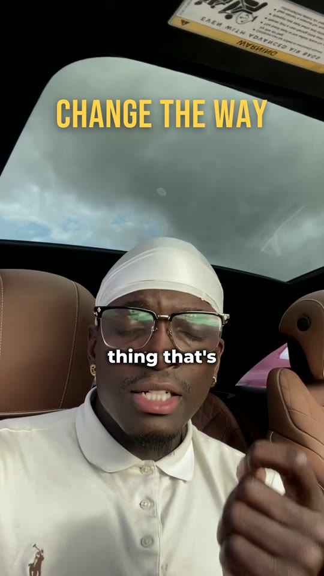
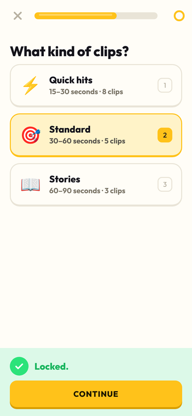
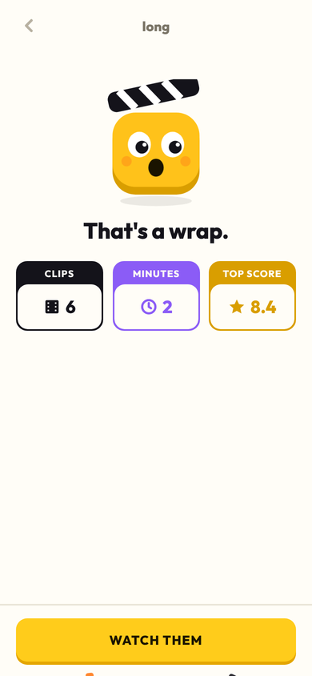
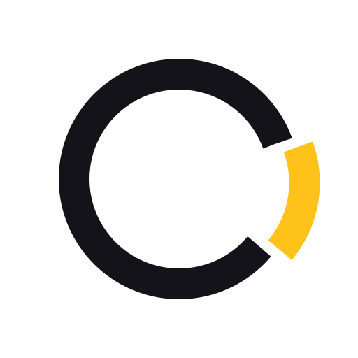

Drop a long video. Kairos finds the moments worth posting and cuts them in your style.
Raw phone footage went in. Nobody touched a timeline. Hook titles, word-by-word captions, sound on every beat.

7.3Scores are the editor's own prediction. Yours replace them the moment you rate a clip.
Three taps. Everything else is a default Kairos remembers from last time.

A number, a quick fix, or just a sentence. Each one tunes the style and writes a lesson the next cut follows.

Premiere's sequence model, stripped to what an agent needs. One JSON timeline per clip. Every edit addressed by the words you said.
claude mcp add kairos -- python -m kairos mcp › Import ep12.mp4, find the five strongest moments, cut them in my style, and show me a still of each hook.

Kairos is the Greek word for the right moment, as opposed to chronos, clock time. The ring is the hour of footage. The gold slice is the forty seconds worth posting. The app wears the same colours the clips do.
Python and ffmpeg on your machine. Open source, MIT. Add a Claude key in Settings for sharper picks, or run it without one.
git clone https://github.com/whoisjaso/VideoEdit cd VideoEdit && pip install -e ".[all]" python -m kairos serve # open localhost:8787